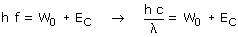
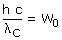

En el efecto fotoeléctrico un electrón absorbe un fotón y utiliza su energía (h·f) para escapar del metal (W0) y adquirir energía cinética:  Como el trabajo de extracción del metal (W0) es constante a medida que aumente λ disminuirá la energía cinética hasta anularse. Caso crítico:  Para valores de λ superiores a λc
no se cumplirá la expresión y cesará la emisión. |